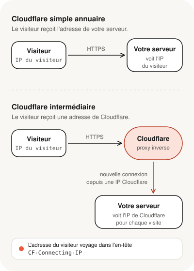

Votre domaine passe par Cloudflare, et une question revient souvent : « Cloudflare gère mon domaine. Pourquoi faut-il autoriser ses adresses IP dans le pare-feu de mon serveur, et pourquoi mes statistiques ne montrent-elles que ses adresses ? » La réponse tient à une distinction simple : Cloudflare peut se contenter d'indiquer où se trouve votre site, ou se placer entre vos visiteurs et votre serveur. Dans le second cas, votre serveur ne parle plus qu'à Cloudflare, et ses réglages doivent en tenir compte.
- Avec le « nuage gris », Cloudflare ne fait qu'indiquer l'adresse de votre serveur ; les visiteurs s'y connectent directement.
- Avec le « nuage orange », Cloudflare reçoit les visiteurs à la place de votre serveur, puis le contacte lui-même : votre serveur voit donc les adresses de Cloudflare.
- L'adresse réelle du visiteur reste disponible dans un en-tête appelé CF-Connecting-IP, à condition de configurer le serveur pour la lire.
- Si votre pare-feu bloque les adresses de Cloudflare, votre site affiche une erreur 521 ou 522.
- Autoriser uniquement Cloudflare protège mieux votre serveur, mais ne suffit pas seul : on le complète par d'autres vérifications.
Nuage gris, nuage orange : deux rôles très différents
Dans l'interface de Cloudflare, chaque enregistrement DNS porte un petit nuage.
- Nuage gris (« DNS only »). Cloudflare joue l'annuaire : quand un visiteur cherche
votre-site.fr, il reçoit l'adresse de votre serveur et s'y connecte directement. - Nuage orange (« Proxied »). Cloudflare donne sa propre adresse à la place de celle de votre serveur. Le visiteur se connecte à Cloudflare, qui filtre la demande, sert ce qu'il a en cache, et contacte votre serveur quand c'est nécessaire.

C'est un peu comme un standard téléphonique : vos clients appellent le standard, qui vous transfère l'appel. Sur votre téléphone s'affiche le numéro du standard, pas celui du client. Le standard peut en revanche vous dire qui appelle.
Ce que cela change pour votre serveur
1. Vos journaux voient Cloudflare, pas vos visiteurs
Avec le nuage orange, toutes les visites arrivent sur votre serveur depuis des adresses de Cloudflare. Par défaut, ce sont elles qui apparaissent dans les journaux du serveur, dans certaines statistiques, et dans les outils qui se fient à l'adresse du visiteur.
Cela pose un vrai problème de sécurité : un outil qui bloque automatiquement les adresses suspectes peut bloquer une adresse de Cloudflare, et donc couper l'accès à de nombreux visiteurs légitimes à la fois.
Cloudflare transmet heureusement l'adresse réelle du visiteur dans un en-tête de la demande, CF-Connecting-IP. Il suffit de configurer le serveur pour la lire, comme expliqué plus bas.
Cet en-tête ne doit être cru que s'il vient réellement de Cloudflare. N'importe qui peut fabriquer une demande avec un faux en-tête : le serveur ne doit le lire que pour les connexions venant des adresses officielles de Cloudflare.
2. Votre pare-feu doit laisser passer Cloudflare
Puisque toutes les visites arrivent de Cloudflare, c'est lui que votre pare-feu doit laisser entrer sur les ports du site web (443 pour HTTPS, 80 pour HTTP). Si ses adresses sont bloquées, les visiteurs voient une page d'erreur de Cloudflare :
- « Error 521: Web server is down » quand votre serveur refuse les connexions de Cloudflare ;
- « Error 522: Connection timed out » quand elles restent sans réponse, ce qui arrive souvent lorsqu'un pare-feu les ignore au lieu de les refuser.
3. Pourquoi ne pas tout laisser ouvert ?
Si votre serveur accepte les connexions de tout Internet, une personne qui connaît son adresse peut le contacter directement, en passant à côté de Cloudflare et de ses protections. Restreindre les ports web aux seules adresses de Cloudflare ferme cette porte de côté.
Il faut seulement garder deux choses en tête :
- Les autres accès ne passent pas par Cloudflare. L'administration du serveur (SSH), la messagerie ou les outils de supervision gardent leurs propres règles : ne les ouvrez pas aux adresses de Cloudflare, mais aux seules adresses qui en ont besoin.
- Les adresses de Cloudflare ne sont pas les vôtres. Le réseau de Cloudflare sert de nombreux clients. Cloudflare classe lui-même cette restriction par adresses comme « moyennement sûre » et propose des protections plus fortes, comme l'authentification du serveur d'origine décrite plus bas.
Pour les personnes qui gèrent un serveur
Cette partie s'adresse à celles et ceux qui administrent eux-mêmes un serveur privé, un serveur dédié ou une instance cloud.
Récupérer l'adresse réelle des visiteurs
On indique au serveur web de lire CF-Connecting-IP, uniquement pour les connexions venant des plages officielles de Cloudflare, publiées sur cloudflare.com/ips. Il faut une ligne par plage, et tenir cette liste à jour.
- set_real_ip_fromune plage de CloudflareÀ répéter pour chaque plage IPv4 et IPv6 publiée par Cloudflare.
- real_ip_headerCF-Connecting-IPUtilise l'adresse transmise par Cloudflare comme adresse du visiteur.
- RemoteIPHeaderCF-Connecting-IPUtilise l'adresse transmise par Cloudflare comme adresse du visiteur.
- RemoteIPTrustedProxyune plage de CloudflareÀ répéter pour chaque plage : seules ces adresses sont crues.
Restreindre le pare-feu sans couper le site
- Listez les enregistrements DNS en nuage orange : seuls ceux-là passent par Cloudflare. Un sous-domaine en nuage gris doit rester joignable directement.
- Listez les autres accès au serveur (administration, messagerie, supervision) et les adresses qui en ont besoin.
- Récupérez les plages officielles de Cloudflare, en IPv4 et en IPv6, sur cloudflare.com/ips.
- Gardez un accès de secours au serveur, par la console de votre hébergeur ou une règle d'administration distincte, avant de modifier les règles.
- Autorisez les plages de Cloudflare sur les ports 80 et 443, puis retirez l'ouverture à tout Internet sur ces ports.
- Testez : le site doit répondre par son nom de domaine, et la connexion directe à l'adresse du serveur doit échouer.
- Prévoyez la mise à jour de la liste : Cloudflare peut ajouter des plages.
Aller plus loin : authentifier les connexions de Cloudflare
Pour que votre serveur n'accepte que les connexions de Cloudflare, Cloudflare propose l'« Authenticated Origin Pulls » : il présente un certificat à votre serveur, qui le vérifie. Cette option demande le mode de chiffrement « Full » ou « Full (strict) ». Selon sa documentation, le certificat fourni par défaut garantit seulement que la demande vient du réseau Cloudflare : pour une protection plus stricte, on utilise son propre certificat. Cloudflare propose aussi d'autres méthodes, comme Cloudflare Tunnel.
Cloudflare n'est pas le seul service à fonctionner ainsi
D'autres réseaux placés devant les serveurs suivent le même principe, chacun avec ses outils :
- Amazon CloudFront fournit des listes d'adresses gérées par AWS (
com.amazonaws.global.cloudfront.origin-facing), utilisables directement dans un Security Group et tenues à jour par AWS. - Azure Front Door fournit l'étiquette de service
AzureFrontDoor.Backend. Microsoft précise que ce filtrage par adresses ne suffit pas, car d'autres clients d'Azure utilisent les mêmes adresses, et recommande de vérifier en plus l'en-têteX-Azure-FDID, propre à chaque profil.
Il n'existe donc pas de règle de pare-feu universelle : chaque service a sa méthode, à suivre dans sa documentation officielle.
Avec le nuage orange, Cloudflare se place entre vos visiteurs et votre serveur. Votre serveur ne voit plus que lui : il faut lui apprendre à lire l'adresse réelle des visiteurs, et autoriser Cloudflare dans le pare-feu, sans oublier les autres accès. Un proxy devant votre serveur ne dispense pas de protéger le serveur lui-même.
Sources
- Cloudflare — Fonctionnement du proxy et statut des enregistrements DNS
- Cloudflare — Plages d'adresses IP officielles
- Cloudflare — Protéger son serveur d'origine
- Cloudflare — Restaurer l'adresse IP réelle des visiteurs
- Cloudflare — Erreur 521
- Cloudflare — Erreur 522
- AWS — Adresses de CloudFront et liste de préfixes gérée
- Microsoft — Sécuriser les origines d'Azure Front Door